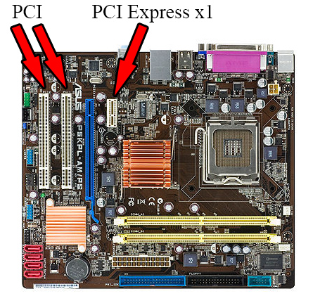
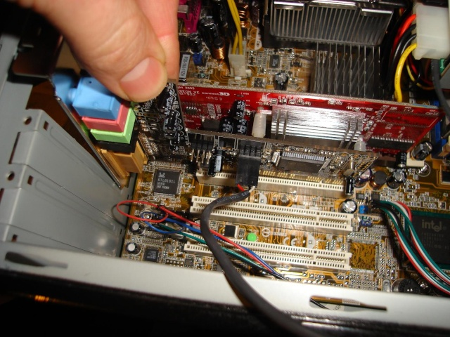

Brancher les cartes
Petit rappel
Les cartes d'extensions les plus courantes branchées sur ce port sont la carte graphique, la carte son et la carte réseau.
C'est donc sur ce port qu'il faut les brancher :)
Localiser les ports
Oui oui ce sont bien ces ports blancs comme montré sur l'image !
Insertion
Vous avez juste à insérer la carte dans le port PCI ( plaquer contre la gauche et essayer de commencer par emboîter la patte métallique en faisant glisser le long de la paroi de la tour )
Vous pouvez maintenant passé à l'étape suivante ;)
Etape suivante